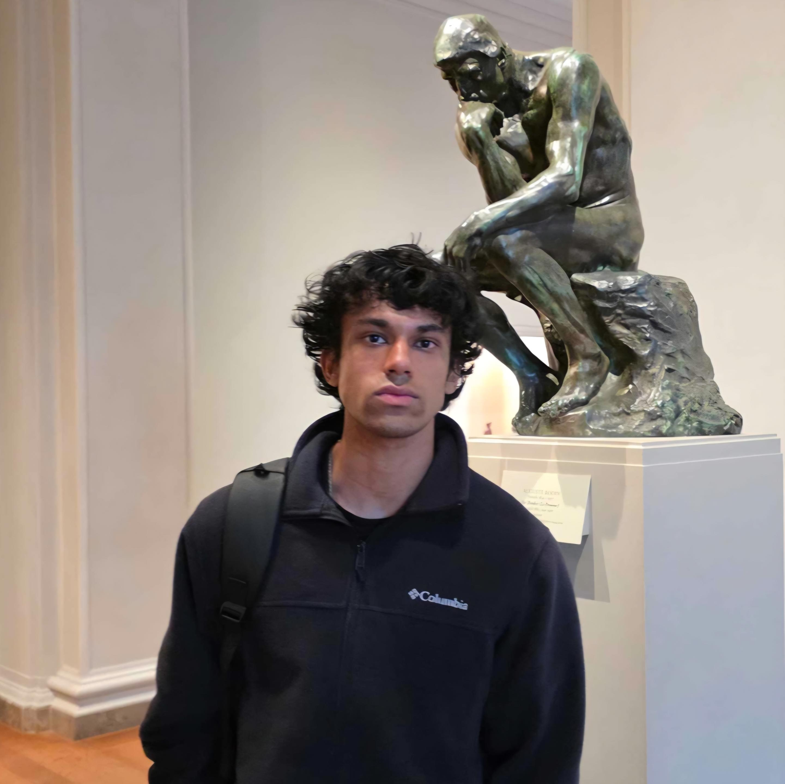

High School
Potomac Falls High School
Completed advanced and college-level coursework with a 4.13 GPA. Cybersecurity and CyberOps courses introduced incident response, brute-force attack analysis, and hands-on security tooling.

IT/Cyber student @ gmu
Focused on security hardening, blue team operations, and clear remediation.
01 / About
I study Information Technology at George Mason University with a concentration in cybersecurity, combining academic work with hands-on experience in security engineering, vulnerability analysis, infrastructure labs, and technical documentation.
My interest began with exploiting/modding games at a young age, helping friends and family troubleshoot operating system problems, and experimenting with different linux distros in a virtual environment. That curiosity developed into a methodical approach to understanding systems, identifying weaknesses, and communicating practical fixes.
Google Cybersecurity/CompTIA ITF+ certified, I continue to pursue opportunities that further deepen my technical skills in the cyber realm and contribute to more resilient systems.
LinkedIn profile (opens in a new tab)02 / Education
High School
Completed advanced and college-level coursework with a 4.13 GPA. Cybersecurity and CyberOps courses introduced incident response, brute-force attack analysis, and hands-on security tooling.
College of Engineering and Computing
Pursuing Information Technology with a cybersecurity concentration; 3.93 GPA. Coursework and part-time work have strengthened organization, time management, and practical problem-solving.
Certifications & Achievements
03 / Experience
Present
SecureIT · Reston Town Center
Built and refined an internal FedRAMP compliance application across document workflows, questionnaires, control libraries, and AI-assisted templates. Deployed changes on AWS, maintained vulnerability-assessment reporting, and reviewed SonarQube findings to support remediation.
Jan–May 2026
Resilience, Inc. · Internship
Tampa, Florida · Remote
Produced remediation reports from penetration-test findings, prioritized and validated fixes with the assessment team, and researched improvements to phishing reporting and Graylog SIEM visibility using open-source threat intelligence.
2025–Present
Loudoun County Public Schools
Ashburn, Virginia
Adapt to varied classrooms, follow lesson plans, support student progress, and maintain a structured learning environment across subjects and grade levels.
2023–2025
Loudoun County Parks, Recreation and Community Services
Leesburg, Virginia
Supervised groups of 35–40 children, coordinated activities across shared facilities, and maintained a safe, structured, and engaging environment.
2022
Cascades Public Library
Potomac Falls, Virginia
Volunteered as a literary reviewer and wrote more than ten analytical blog posts evaluating each work’s quality, relevance, and themes for the library’s audience.
04 / Technical Demonstrations
05 / Technical Projects
06 / Contact
For cybersecurity opportunities and technical collaboration, reach me directly.
abyan20539@gmail.com